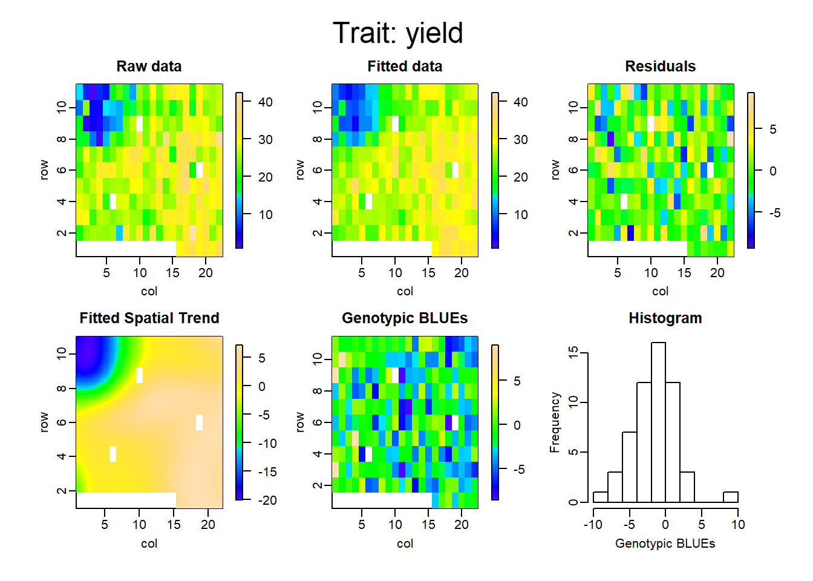

Section 5 Applying Spatial Analytical Techniques
Reload data if it is not already in your R environment:
library(agridat); library(dplyr); library(tidyr)
library(sp)
data("stroup.nin")
Nin <- stroup.nin %>% mutate(col.width = col * 1.2,
row.length = row * 4.3) %>%
fill(rep, .direction = "up") %>% arrange(col, row)
Nin_na <- filter(Nin, !is.na(yield))
Nin_spatial <- Nin_na
coordinates(Nin_spatial) <- ~ col.width + row.lengthOnce spatial auto-correlation has been identified in field trials, the next step is to employ a modelling technique that will reduce the impact of spatial variation on the final estimates from the analysis.
5.1 Prep work
The first thing is to run a standard linear model. A common model specification for the randomised complete block design (RCBD) is to include cultivar as a fixed effect and block as a random effect.
library(nlme); library(emmeans)
nin.lme <- lme(yield ~ gen, random = ~1|rep,
data = Nin,
na.action = na.exclude)
# extract the least squares means for variety
preds.lme <- as.data.frame(emmeans(nin.lme, "gen"))The variables “gen” refers to the cultivar or breeding line being trialled, and “rep” is the block, and the dependent variable, “yield” is grain yield. Basic exploratory analysis was conducted in ??.
5.3 Splines
The package SpATS, “spatial analysis for field trials”, implements B-splines for row and column effects.
library(SpATS)
# variables specifying row and column as factors are needed
Nin$colF <- Nin$R <- as.factor(Nin$col)
Nin$rowF <- Nin$C <- as.factor(Nin$row)
nin.spline <- SpATS(response = "yield",
spatial = ~ PSANOVA(col, row, nseg = c(10,20),
degree = 3, pord = 2),
genotype = "gen",
random = ~ rep + rowF + colF,
data = Nin, control = list(tolerance = 1e-03))## Effective dimensions
## -------------------------
## It. Deviance rep rowF colF f(col) f(row) f(col):row col:f(row)f(col):f(row)
## 1 2608.941560 0.146 0.491 1.195 2.044 4.548 1.891 4.162 10.831
## 2 737.468573 0.013 0.224 1.575 2.262 4.389 2.261 3.609 8.904
## 3 736.044871 0.001 0.115 1.962 2.357 4.388 2.636 3.261 7.807
## 4 735.178918 0.000 0.061 2.336 2.381 4.401 2.996 3.051 7.180
## 5 734.648724 0.000 0.033 2.684 2.361 4.408 3.310 2.928 6.824
## 6 734.340525 0.000 0.018 3.001 2.314 4.410 3.559 2.857 6.627
## 7 734.164966 0.000 0.009 3.286 2.256 4.410 3.745 2.818 6.522
## 8 734.063429 0.000 0.005 3.540 2.196 4.410 3.881 2.797 6.469
## 9 734.003173 0.000 0.003 3.765 2.141 4.409 3.980 2.788 6.446
## 10 733.966667 0.000 0.001 3.963 2.093 4.408 4.050 2.785 6.441
## 11 733.944253 0.000 0.001 4.135 2.053 4.408 4.100 2.785 6.444
## 12 733.930372 0.000 0.000 4.282 2.022 4.408 4.136 2.787 6.452
## 13 733.921718 0.000 0.000 4.406 1.997 4.407 4.161 2.790 6.461
## 14 733.916291 0.000 0.000 4.510 1.977 4.407 4.179 2.793 6.471
## 15 733.912872 0.000 0.000 4.596 1.963 4.407 4.191 2.796 6.481
## 16 733.910708 0.000 0.000 4.667 1.951 4.407 4.200 2.799 6.489
## 17 733.909334 0.000 0.000 4.725 1.942 4.407 4.206 2.801 6.497
## 18 733.908459 0.000 0.000 4.772 1.935 4.407 4.210 2.803 6.503
## Timings:
## SpATS 2.75 seconds
## All process 3.15 secondspreds.spline <- predict(nin.spline, which = "gen") %>%
dplyr::select(gen, emmean = "predicted.values", SE = "standard.errors")Examine spatial trends:

5.4 Spatial regression approaches
At this time, there are not suitable options for running spatial regression of variety trial data. Existing options in spatialreg, spANOVA, and spaMM are challenging to use, lack sufficient options for typical experimental design in variety trials and/or do not provide the desired output.